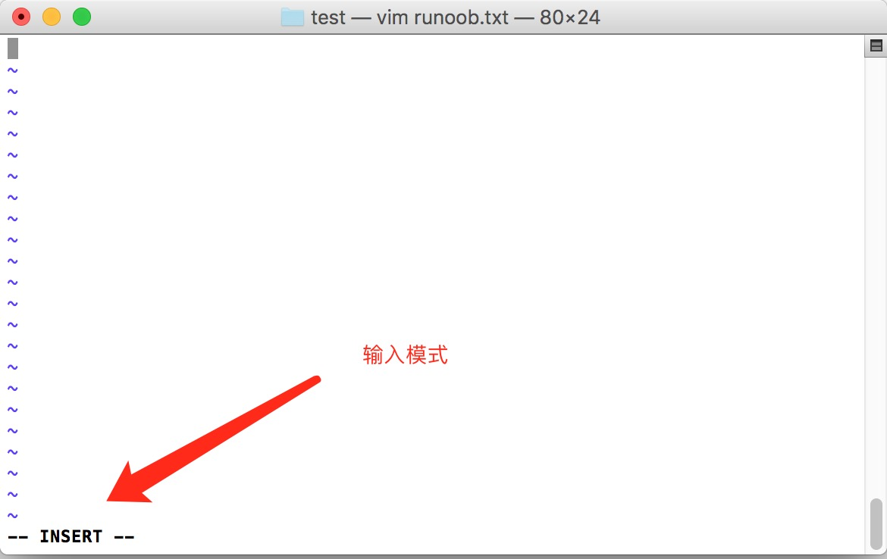

Linux vi/vim
すべての Unix Like システムには vi テキストエディタが組み込まれており、他のテキストエディタは必ずしも存在するとは限りません。
しかし、現在私たちがよく使用するのは vim エディタです。
vim はプログラム編集の能力を持ち、文字色で構文の正しさを自動的に判別できるため、プログラミングに便利です。
関連記事：史上最全の Vim ショートカットキー配列図 — 入門から上級へ
vim とは？
Vim は vi から発展したテキストエディタです。コード補完、コンパイル、エラーへのジャンプなどプログラミングに便利な機能が特に豊富で、プログラマーの間で広く使われています。
簡単に言うと、vi は旧式のワードプロセッサですが、機能はすでに充実しており、それでも改善の余地があります。vim はプログラム開発者にとって非常に便利なツールといえるでしょう。
vim の公式サイト (https://www.vim.org/) 自身も、vim はワープロソフトではなくプログラム開発ツールであると述べています。
vim キーボード図
↑ 任意のキーをクリックすると、詳細な説明と使用例が表示されます
vi/vim の使用
基本的に vi/vim は3つのモードに分かれています。コマンドモード（Command Mode）、挿入モード（Insert Mode）、およびコマンドラインモード（Command-Line Mode）です。。
コマンドモード
ユーザーが vi/vim を起動した直後、コマンドモードに入ります。
この状態では、キーボードを打つと Vim はそれを入力文字ではなくコマンドとして認識します。例えば、このときiを押しても文字は入力されず、iはコマンドとして扱われます。
以下はノーマルモードでよく使うコマンドです：
- i-- 挿入モードに切り替え、カーソルの現在位置からテキストを入力します。
- x-- カーソル位置の文字を削除します。
- :-- コマンドラインモードに切り替え、最下行でコマンドを入力します。
- a-- 挿入モードに入り、カーソルの次の位置からテキストを入力します。
- o：現在の行の下に新しい行を挿入し、挿入モードに入ります。
- O-- 現在の行の上に新しい行を挿入し、挿入モードに入ります。
- dd-- 現在の行を切り取ります。
- yy-- 現在の行をコピーします。
- p（小文字） -- クリップボードの内容をカーソルの下に貼り付けます。
- P（大文字）-- クリップボードの内容をカーソルの上に貼り付けます。
- u-- 直前の操作を元に戻します。
- Ctrl + r-- 直前の元に戻した操作をやり直します。
- :w-- ファイルを保存します。
- :q-- Vim エディタを終了します。
- :q!-- 変更を保存せずに Vim エディタを強制終了します。
テキストを編集するには、Vim を起動してコマンドモードに入り、iを押して挿入モードに切り替えるだけです。
コマンドモードにはごく基本的なコマンドしかないため、さらに多くのコマンドを入力するにはコマンドラインモードに頼る必要があります。
挿入モード
コマンドモードでiを押すと挿入モードに入り、Escキーでノーマルモードに戻れます。
挿入モードでは、次のキーを使用できます：
- 文字キーおよび Shift との組み合わせ、文字を入力
- ENTER、Enter キー、改行
- BACK SPACE、Backspace キー、カーソルの前の文字を削除
- DEL、Delete キー、カーソルの後ろの文字を削除
- 方向キー、テキスト内でカーソルを移動
- HOME/END、カーソルを行頭/行末に移動
- Page Up/Page Down、上/下ページ
- Insert、カーソルを入力/置換モードに切り替え、カーソルが縦線/下線になります
- ESC、挿入モードを終了し、コマンドモードに切り替え
コマンドラインモード
コマンドモードで:（英文コロン）を押すとコマンドラインモードに入ります。
コマンドラインモードでは、1文字または複数文字のコマンドを入力でき、利用可能なコマンドは非常に多くあります。
コマンドラインモードの基本的なコマンドは次のとおりです（コロンは省略しています）：
:w：ファイルを保存します。:q：Vim エディタを終了します。:wq：ファイルを保存して Vim エディタを終了します。:q!：変更を保存せずに Vim エディタを強制終了します。
按 ESCキーを押すと、いつでもコマンドラインモードを終了できます。
簡単に言うと、この3つのモードは次の図のように表すことができます：

vi/vim 使用例
vi/vim でノーマルモードに入る
vi を使用して runoob.txt という名前のファイルを作成したい場合は、次のようにします：
$ vim runoob.txt
直接入力しますvi ファイル名これで vi のノーマルモードに入れます。vi の後には必ずファイル名を付けてください。そのファイルが存在するかどうかは関係ありません！

i を押して挿入モード（編集モードとも呼ばれる）に入り、テキストの編集を開始します
ノーマルモードでは、i, o, a などのキーを押すだけで挿入モードに入れます！
編集モードでは、左下のステータスバーに –INSERT- と表示されます。これは任意の文字を入力できるという合図です。
このとき、キーボードのEscこのキー以外は、その他のキーはすべて通常の入力ボタンとみなせるので、自由に編集できます。

ESC ボタンを押してノーマルモードに戻ります
さて、上の例のように編集が完了したとしましょう。では、どうやって終了するのでしょうか？そうです！その通り！次のキーを押すだけです。Escこのボタンです！すぐに画面左下の – INSERT – が消えるのがわかります！
ノーマルモードで次のように押します:wq保存して vi を終了します
OK、保存しましょう。保存して終了するコマンドは簡単で、:wqと入力するだけで保存して終了できます！

OK！これで runoob.txt ファイルの作成に成功しました。
vi/vim キー操作の説明
上記の簡単な例の i, Esc, :wq 以外にも、vim には使用できるキーが非常に多くあります。
第一部：ノーマルモードで使用できるカーソル移動、コピー＆ペースト、検索・置換など
| カーソルの移動方法 | |
|---|---|
| h または 左矢印キー(←) | カーソルが左に1文字移動します |
| j または 下矢印キー(↓) | カーソルが下に1文字移動します |
| k または 上矢印キー(↑) | カーソルが上に1文字移動します |
| l または 右矢印キー(→) | カーソルが右に1文字移動します |
| 右手をキーボードに置くと、hjkl が並んでいることに気づくでしょう。この4つのキーでカーソルを移動できます。 複数回移動したい場合、例えば下に30行移動するには、"30j" または "30↓" の組み合わせキーを使用できます。 つまり、実行したい回数（数字）を入力してから、動作キーを押すだけです！ | |
| [Ctrl] + [f] | 画面が『下』に1ページ移動します。[Page Down]キーに相当します。 （よく使う） |
| [Ctrl] + [b] | 画面が『上』に1ページ移動します。[Page Up]キーに相当します。 （よく使う） |
| [Ctrl] + [d] | 画面が『下』に半ページ移動します |
| [Ctrl] + [u] | 画面が『上』に半ページ移動します |
| + | カーソルを次の行の最初の空白以外の文字に移動します |
| - | カーソルを前の行の最初の空白以外の文字に移動します |
| n<space> | その n は『数字』を表します。例えば 20。数字を押してからスペースキーを押すと、カーソルはこの行の n 文字分右に移動します。例えば 20<space> ならカーソルは後ろへ20文字分移動します。 |
| 0 またはファンクションキー [Home] | これは数字の『0』：この行の先頭の文字に移動します（よく使う） |
| $ またはファンクションキー [End] | この行の最後の文字に移動します（よく使う） |
| H | カーソルをこの画面の最上行の最初の文字に移動します |
| M | カーソルをこの画面の中央の行の最初の文字に移動します |
| L | カーソルをこの画面の最下行の最初の文字に移動します |
| G | このファイルの最後の行に移動します（よく使う） |
| nG | n は数字です。このファイルの n 行目に移動します。例えば 20G ならこのファイルの20行目に移動します（:set nu と併用できます） |
| gg | このファイルの先頭行に移動します。1G と同じです！（よく使う） |
| n<Enter> | n は数字です。カーソルを下に n 行移動します（よく使う） |
| 検索と置換 | |
| /word | カーソルより下に向かって、word という名前の文字列を検索します。例えばファイル内で vbird という文字列を検索するには、/vbird と入力すればOKです！（よく使う） |
| ?word | カーソルより上に向かって、word という名前の文字列を検索します。 |
| n | この n は英語のキーです。直前の検索操作を繰り返します。例えば、先ほど /vbird で vbird という文字列を下向きに検索した場合、n を押すと下方向へ次の vbird という文字列を検索し続けます。?vbird を実行した場合は、n を押すと上方向へ vbird という文字列を検索し続けます！ |
| N | この N は英語のキーです。n とちょうど逆で、直前の検索操作を『逆方向』に行います。例えば /vbird の後、N を押すと『上方向』に vbird を検索します。 |
| /word を n や N と組み合わせて使うと非常に便利です！検索したキーワードを繰り返し見つけられます！ | |
| :n1,n2s/word1/word2/g | n1 と n2 は数字です。n1 行目から n2 行目の間で word1 という文字列を検索し、その文字列を word2 に置換します！例えば、100 行目から 200 行目の間で vbird を検索し VBIRD に置換する場合は： 『:100,200s/vbird/VBIRD/g』。（よく使う） |
| :1,$s/word1/word2/g 或 :%s/word1/word2/g | 最初の行から最後の行までで word1 という文字列を検索し、その文字列を word2 に置換します！（よく使う） |
| :1,$s/word1/word2/gc 或 :%s/word1/word2/gc | 最初の行から最後の行までで word1 という文字列を検索し、その文字列を word2 に置換します！しかも置換前に確認 (confirm) のプロンプトをユーザーに表示して、置換するかどうかを確認します！（よく使う） |
| 削除・コピー・貼り付け | |
| x, X | 1行の文字の中で、x は後ろ向きに1文字削除（[del] キーに相当）、X は前向きに1文字削除（[backspace] キー、つまりバックスペースキーに相当）です（よく使う） |
| nx | n は数字で、後ろ向きに連続して n 文字削除します。例えば、10文字連続して削除したい場合は、『10x』。 |
| dd | カーソルのある行全体を切り取ります（よく使う）。p / P で貼り付けられます。 |
| ndd | n は数字です。カーソル位置から下へ n 行を切り取ります。例えば 20dd は20行を切り取ります（よく使う）。p / P で貼り付けられます。 |
| d1G | カーソル位置から先頭行までのすべてのデータを削除 |
| dG | カーソル位置から最終行までのすべてのデータを削除 |
| d$ | カーソル位置からその行の最後の文字までを削除 |
| d0 | それは数字の0です。カーソル位置からその行の先頭の文字までを削除 |
| yy | カーソルのある行をコピーします（よく使う） |
| nyy | n は数字です。カーソル位置から下へ n 行をコピーします。例えば 20yy は20行をコピーします（よく使う） |
| y1G | カーソルのある行から先頭行までのすべてのデータをコピー |
| yG | カーソルのある行から最終行までのすべてのデータをコピー |
| y0 | カーソル位置の文字からその行の行頭までのすべてのデータをコピー |
| y$ | カーソル位置の文字からその行の行末までのすべてのデータをコピー |
| p, P | p はコピー済みのデータをカーソルの次の行に貼り付け、P はカーソルの前の行に貼り付けます！例えば、現在カーソルが20行目にあり、10行分のデータをコピー済みだとします。p を押すと、その10行分のデータは元の20行目の後に貼り付けられ、つまり21行目から貼り付けられます。では P を押した場合は？元の20行目は押し出されて30行目になります。（よく使う） |
| J | カーソルのある行と次の行のデータを連結して1行にします |
| c | 複数のデータを繰り返し削除します。例えば下へ10行削除する場合、[ 10cj ] |
| u | 直前の操作を元に戻します。（よく使う） |
| [Ctrl]+r | 直前の操作をやり直します。（よく使う） |
| この u と [Ctrl]+r は非常によく使うコマンドです！一方は元に戻す、もう一方はやり直しです～この2つの機能キーを使えば、あなたの編集は、へへっ、とても楽しいですよ！ | |
| . | 疑わないでください！これが小数点です！直前の操作を繰り返すという意味です。削除の繰り返しや貼り付けの繰り返しなどの操作をしたい場合は、小数点『.』を押すだけです！（よく使う） |
第二部：ノーマルモードから編集モードに切り替える際に使えるボタンの説明
| 入力または置換の編集モードに入る | |
|---|---|
| i, I | 入力モード（Insert mode）に入る： i は『現在のカーソル位置から入力』、I は『現在の行の最初の空白以外の文字から入力を開始』です。（よく使う) |
| a, A | 入力モード（Insert mode）に入る： a は『現在のカーソル位置の次の文字から入力開始』、A は『カーソルのある行の最後の文字から入力開始』です。（よく使う) |
| o, O | 入力モード（Insert mode）に入る： これは英字の o の大文字小文字です。o は現在のカーソル位置の次の行に新しい行を入力します；O は現在のカーソル位置の前の行に新しい行を入力します！（よく使う) |
| r, R | 置換モード（Replace mode）に入る： r はカーソル位置の1文字だけを1回置換します；R はカーソル位置の文字を ESC を押すまで置換し続けます；（よく使う) |
| 上記のキーのうち、vi 画面の左下隅に『--INSERT--』または『--REPLACE--』の表示が出ます。名前を見ればその動作が分かりますね！！特に注意してほしいのは、先ほども述べたように、ファイル内で文字を入力したいときは、必ず左下隅に INSERT または REPLACE が表示されていることを確認してから入力してくださいね！ | |
| [Esc] | 編集モードを終了して、ノーマルモードに戻ります（よく使う) |
第三部：ノーマルモードからコマンドラインモードに切り替える際に使えるボタンの説明
| コマンドラインでの保存・終了などのコマンド | |
|---|---|
| :w | 編集中のデータをハードディスクのファイルに書き込みます（よく使う) |
| :w! | ファイルの属性が『読み取り専用』の場合でも、そのファイルへ強制的に書き込みます。ただし、実際に書き込めるかどうかは、そのファイルに対するあなたのファイル権限にも関係しますよ！ |
| :q | vi を終了します（よく使う) |
| :q! | ファイルを変更したが保存したくない場合、! を使って強制的に保存せず終了します。 |
| 注意してくださいね。あの感嘆符 (!) は vi において、しばしば『強制』の意味を持ちます～ | |
| :wq | 保存して終了します。:wq! なら強制保存して終了です（よく使う) |
| ZZ | これは大文字の Z です！変更した場合は、現在のファイルを保存してから終了します！効果は（保存して終了）と同じです。 |
| ZQ | 保存せず、強制終了します。効果は次のものと同じです。:q!。 |
| :w [filename] | 編集中のデータを別のファイルとして保存します（名前を付けて保存に類似） |
| :r [filename] | 編集中のデータに、別のファイルのデータを読み込みます。つまり 『filename』 というファイルの内容をカーソルのある行の後ろに追加します。 |
| :n1,n2 w [filename] | n1 から n2 までの内容を filename というファイルに保存します。 |
| :! command | 一時的に vi を離れて、コマンドラインで command の表示結果を実行します！例えば 『:! ls /home』で vi の中から /home の下にある ls の出力によるファイル情報を確認できます！ |
| vim 環境の変更 | |
| :set nu | 行番号を表示します。設定すると、各行の先頭に行番号が表示されます。 |
| :set nonu | set nu と逆で、行番号を非表示にします！ |
特に注意してください。vi/vim では数字はとても意味があります！数字は通常、何回繰り返すかを表します！また、何番目へ移動するかを表すこともあります。
例えば、50行削除したい場合は、『50dd』ですよね！数字は操作の前に付けます。下へ20行移動したい場合は？『20j』または『20↓』でOKです。
その他の拡張
荣书
zrs***07@163.com
vim で一括コメントを追加する
方法1：ブロック選択モード
一括コメント：
Ctrl + vブロック選択モードに入り、カーソルを移動してコメントアウトしたい行を選択し、次に大文字のI行頭挿入モードに入り、コメント記号（例：// 或 #）を入力します。入力が完了したら、キーを2回押しますESC，Vim自動的に選択したすべての行頭にコメントが追加され、保存して終了するとコメントアウト完了です。
コメント解除：
Ctrl + vブロック選択モードに入り、削除したい行頭のコメント記号を選択します。注意：//2つ選択する必要があります。選択したらdコメントを削除できます。ESC保存して終了します。
方法2: 置換コマンド
一括コメントアウト。
次のコマンドを使用して、指定した行頭にコメントを追加します。
コマンド形式：:起始行号,结束行号s/^/注释符/g（コロンに注意）。
コメント解除：
コマンド形式：:起始行号,结束行号s/^注释符//g（コロンに注意）。
例：
1、10〜20行に追加//コメント
2、10〜20行で削除//コメント
3、10〜20行に追加#コメント
4、10 - 20行で # コメントを削除
荣书
zrs***07@163.com
playful_clown
yun***y@qq.com
vimショートカットキー補足（挿入モード）
vimショートカットキー補足（編集モード）
vimショートカットキー補足（挿入モードと編集モード共通）
playful_clown
yun***y@qq.com
ラララ、太陽を植える
edo***d@163.com
とても良く書けています。少し補足しますと、vimではドキュメント間のジャンプが可能です。
コマンドモードで、カーソルをドキュメントのパス上に置きます。（このときドキュメントは変更されていない必要があります）
gf : パスが示すドキュメントにジャンプ
ctrl + o ： 元のドキュメントに戻る
ラララ、太陽を植える
edo***d@163.com